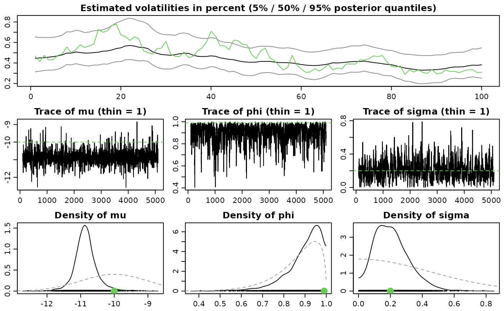
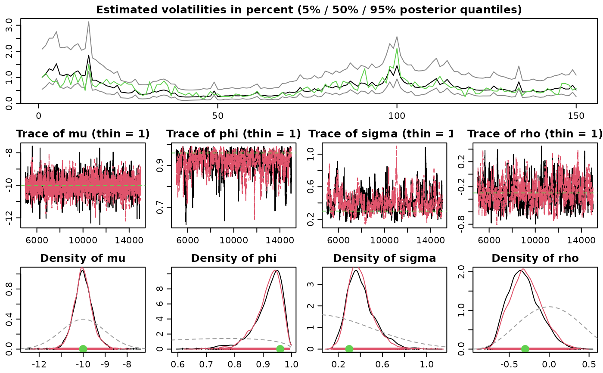
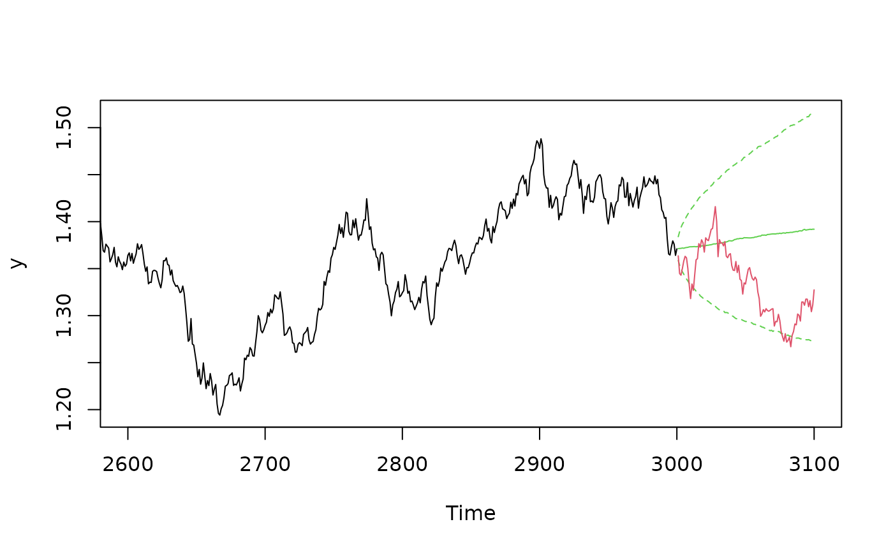
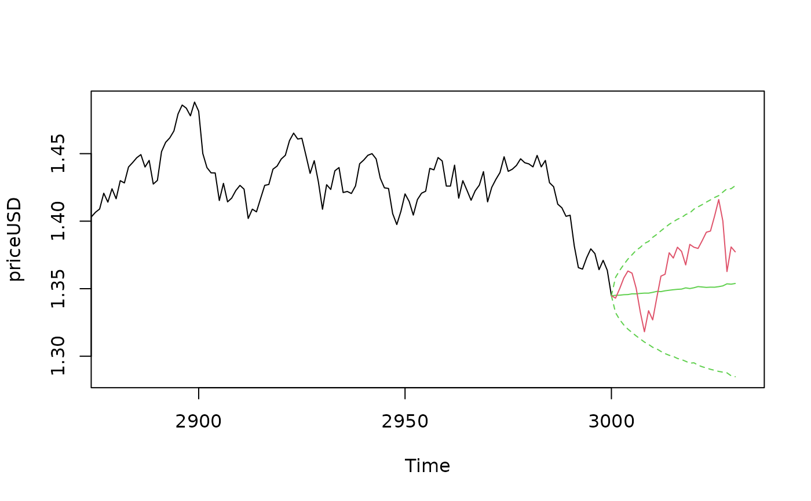

R/wrappers.R
svsample.Rdsvsample simulates from the joint posterior distribution of the SV
parameters mu, phi, sigma (and potentially nu and rho),
along with the latent log-volatilities h_0,...,h_n and returns the
MCMC draws. If a design matrix is provided, simple Bayesian regression can
also be conducted. For similar functionality with a formula interface,
see svlm.
svsample(
y,
draws = 10000,
burnin = 1000,
designmatrix = NA,
priormu = c(0, 100),
priorphi = c(5, 1.5),
priorsigma = 1,
priornu = 0,
priorrho = NA,
priorbeta = c(0, 10000),
priorlatent0 = "stationary",
priorspec = NULL,
thin = 1,
thinpara = thin,
thinlatent = thin,
keeptime = "all",
quiet = FALSE,
startpara = NULL,
startlatent = NULL,
parallel = c("no", "multicore", "snow"),
n_cpus = 1L,
cl = NULL,
n_chains = 1L,
print_progress = "automatic",
expert = NULL,
...
)
svtsample(
y,
draws = 10000,
burnin = 1000,
designmatrix = NA,
priormu = c(0, 100),
priorphi = c(5, 1.5),
priorsigma = 1,
priornu = 0.1,
priorrho = NA,
priorbeta = c(0, 10000),
priorlatent0 = "stationary",
priorspec = NULL,
thin = 1,
thinpara = thin,
thinlatent = thin,
keeptime = "all",
quiet = FALSE,
startpara = NULL,
startlatent = NULL,
parallel = c("no", "multicore", "snow"),
n_cpus = 1L,
cl = NULL,
n_chains = 1L,
print_progress = "automatic",
expert = NULL,
...
)
svlsample(
y,
draws = 20000,
burnin = 2000,
designmatrix = NA,
priormu = c(0, 100),
priorphi = c(5, 1.5),
priorsigma = 1,
priornu = 0,
priorrho = c(4, 4),
priorbeta = c(0, 10000),
priorlatent0 = "stationary",
priorspec = NULL,
thin = 1,
thinpara = thin,
thinlatent = thin,
keeptime = "all",
quiet = FALSE,
startpara = NULL,
startlatent = NULL,
parallel = c("no", "multicore", "snow"),
n_cpus = 1L,
cl = NULL,
n_chains = 1L,
print_progress = "automatic",
expert = NULL,
...
)
svtlsample(
y,
draws = 20000,
burnin = 2000,
designmatrix = NA,
priormu = c(0, 100),
priorphi = c(5, 1.5),
priorsigma = 1,
priornu = 0.1,
priorrho = c(4, 4),
priorbeta = c(0, 10000),
priorlatent0 = "stationary",
priorspec = NULL,
thin = 1,
thinpara = thin,
thinlatent = thin,
keeptime = "all",
quiet = FALSE,
startpara = NULL,
startlatent = NULL,
parallel = c("no", "multicore", "snow"),
n_cpus = 1L,
cl = NULL,
n_chains = 1L,
print_progress = "automatic",
expert = NULL,
...
)
svsample2(
y,
draws = 10000,
burnin = 1000,
designmatrix = NA,
priormu = c(0, 100),
priorphi = c(5, 1.5),
priorsigma = 1,
priornu = 0,
priorrho = NA,
priorbeta = c(0, 10000),
priorlatent0 = "stationary",
thinpara = 1,
thinlatent = 1,
keeptime = "all",
quiet = FALSE,
startpara = NULL,
startlatent = NULL
)numeric vector containing the data (usually log-returns), which
must not contain zeros. Alternatively, y can be an svsim
object. In this case, the returns will be extracted and a message is signalled.
single number greater or equal to 1, indicating the number of draws after burn-in (see below). Will be automatically coerced to integer. The default value is 10000.
single number greater or equal to 0, indicating the number of draws discarded as burn-in. Will be automatically coerced to integer. The default value is 1000.
regression design matrix for modeling the mean. Must
have length(y) rows. Alternatively, designmatrix may be a
string of the form "arX", where X is a nonnegative integer. To
fit a constant mean model, use designmatrix = "ar0" (which is
equivalent to designmatrix = matrix(1, nrow = length(y))). To fit an
AR(1) model, use designmatrix = "ar1", and so on. If some elements of
designmatrix are NA, the mean is fixed to zero (pre-1.2.0
behavior of stochvol).
numeric vector of length 2, indicating mean and standard
deviation for the Gaussian prior distribution of the parameter mu,
the level of the log-volatility. The default value is c(0, 100),
which constitutes a practically uninformative prior for common exchange rate
datasets, stock returns and the like.
numeric vector of length 2, indicating the shape parameters
for the Beta prior distribution of the transformed parameter
(phi + 1) / 2, where phi denotes the persistence of the
log-volatility. The default value is c(5, 1.5), which constitutes a
prior that puts some belief in a persistent log-volatility but also
encompasses the region where phi is around 0.
single positive real number, which stands for the scaling
of the transformed parameter sigma^2, where sigma denotes the
volatility of log-volatility. More precisely, sigma^2 ~ priorsigma *
chisq(df = 1). The default value is 1, which constitutes a
reasonably vague prior for many common exchange rate datasets, stock returns
and the like.
single non-negative number, indicating the rate parameter
for the exponential prior distribution of the parameter; can be Inf
nu, the degrees-of-freedom parameter of the conditional innovations
t-distribution. The default value is 0, fixing the
degrees-of-freedom to infinity. This corresponds to conditional standard
normal innovations, the pre-1.1.0 behavior of stochvol.
either NA for the no-leverage case or a numeric
vector of length 2 that specify the beta prior distribution for
(rho+1)/2
numeric vector of length 2, indicating the mean and
standard deviation of the Gaussian prior for the regression parameters. The
default value is c(0, 10000), which constitutes a very vague prior
for many common datasets. Not used if designmatrix is NA.
either a single non-negative number or the string
'stationary' (the default, also the behavior before version 1.3.0).
When priorlatent0 is equal to 'stationary', the stationary
distribution of the latent AR(1)-process is used as the prior for the
initial log-volatility h_0. When priorlatent0 is equal to a
number \(B\), we have \(h_0 \sim N(\mu, B\sigma^2)\) a priori.
in case one needs different prior distributions than the
ones specified by priormu, ..., priorrho, a priorspec
object can be supplied here. A smart constructor for this usecase is
specify_priors.
single number greater or equal to 1, coercible to integer.
Every thinparath parameter and latent draw is kept and returned. The default
value is 1, corresponding to no thinning of the parameter draws i.e. every
draw is stored.
single number greater or equal to 1, coercible to integer.
Every thinparath parameter draw is kept and returned. The default
value is thin.
single number greater or equal to 1, coercible to integer.
Every thinlatentth latent variable draw is kept and returned. The
default value is thin
Either 'all' (the default) or 'last'. Indicates which latent volatility draws should be stored.
logical value indicating whether the progress bar and other
informative output during sampling should be omitted. The default value is
FALSE, implying verbose output.
optional named list, containing the starting values
for the parameter draws. If supplied, startpara may contain
elements named mu, phi, sigma, nu, rho,
beta, and latent0.
The default value is equal to the prior mean.
In case of parallel execution with cl provided, startpara can be a list of
named lists that initialize the parallel chains.
optional vector of length length(y),
containing the starting values for the latent log-volatility draws. The
default value is rep(-10, length(y)).
In case of parallel execution with cl provided, startlatent can be a list of
numeric vectors that initialize the parallel chains.
optional one of "no" (default), "multicore", or "snow",
indicating what type of parallellism is to be applied. Option
"multicore" is not available on Windows.
optional positive integer, the number of CPUs to be used in case of
parallel computations. Defaults to 1L. Ignored if parameter
cl is supplied and parallel != "snow".
optional so-called SNOW cluster object as implemented in package
parallel. Ignored unless parallel == "snow".
optional positive integer specifying the number of independent MCMC chains
optional one of "automatic", "progressbar",
or "iteration", controls the output. Ignored if quiet is TRUE.
optional named list of expert parameters. For most
applications, the default values probably work best. Interested users are
referred to the literature provided in the References section. If
expert is provided, it may contain the following named elements:
Logical value. If TRUE (the default),
then ancillarity-sufficiency interweaving strategy (ASIS) is applied
to improve on the sampling efficiency for the parameters.
Otherwise one parameterization is used.
Logical value. If FALSE
(the default), then auxiliary mixture sampling is used to sample the latent
states. If TRUE, extra computations are made to correct for model
misspecification either ex-post by reweighting or on-line using a
Metropolis-Hastings step.
Any extra arguments will be forwarded to
updatesummary, controlling the type of statistics calculated
for the posterior draws.
The value returned is a list object of class svdraws holding
mcmc.list object containing the parameter draws from
the posterior distribution.
mcmc.list object containing the
latent instantaneous log-volatility draws from the posterior
distribution.
mcmc.list object containing the latent
initial log-volatility draws from the posterior distribution.
mcmc.list object containing the latent variance inflation
factors for the sampler with conditional t-innovations (optional).
mcmc.list object containing the regression coefficient
draws from the posterior distribution (optional).
the left hand side of the observation equation, usually
the argument y. In case of an AR(k) specification, the
first k elements are removed.
proc_time object containing the
run time of the sampler.
a priorspec object containing the parameter
values of the prior distributions for mu,
phi, sigma, nu, rho, and
betas, and the variance of specification for latent0.
list containing the thinning
parameters, i.e. the arguments thinpara, thinlatent and
keeptime.
list containing a collection of
summary statistics of the posterior draws for para, latent,
and latent0.
character containing information about how designmatrix
was employed.
To display the output, use print, summary and plot. The
print method simply prints the posterior draws (which is very likely
a lot of output); the summary method displays the summary statistics
currently stored in the object; the plot method
plot.svdraws gives a graphical overview of the posterior
distribution by calling volplot, traceplot and
densplot and displaying the results on a single page.
Functions svtsample, svlsample, and svtlsample are
wrappers around svsample with convenient default values for the SV
model with t-errors, leverage, and both t-errors and leverage, respectively.
For details concerning the algorithm please see the paper by Kastner and Frühwirth-Schnatter (2014) and Hosszejni and Kastner (2019).
If y contains zeros, you might want to consider de-meaning your
returns or use designmatrix = "ar0".
svsample2 is deprecated.
Kastner, G. and Frühwirth-Schnatter, S. (2014). Ancillarity-sufficiency interweaving strategy (ASIS) for boosting MCMC estimation of stochastic volatility models. Computational Statistics & Data Analysis, 76, 408–423, doi:10.1016/j.csda.2013.01.002 .
Hosszejni, D. and Kastner, G. (2019). Approaches Toward the Bayesian Estimation of the Stochastic Volatility Model with Leverage. Springer Proceedings in Mathematics & Statistics, 296, 75–83, doi:10.1007/978-3-030-30611-3_8 .
###############
# Full examples
###############
# Example 1
## Simulate a short and highly persistent SV process
sim <- svsim(100, mu = -10, phi = 0.99, sigma = 0.2)
## Obtain 5000 draws from the sampler (that's not a lot)
draws <-
svsample(sim, draws = 5000, burnin = 100,
priormu = c(-10, 1), priorphi = c(20, 1.5), priorsigma = 0.2)
#> Extracted data vector from 'svsim'-object.
#> Done!
#> Summarizing posterior draws...
## Check out the results
summary(draws)
#>
#> Summary of 'svdraws' object
#>
#> Prior distributions:
#> mu ~ Normal(mean = -10, sd = 1)
#> (phi+1)/2 ~ Beta(a = 20, b = 1.5)
#> sigma^2 ~ Gamma(shape = 0.5, rate = 2.5)
#> nu ~ Infinity
#> rho ~ Constant(value = 0)
#>
#> Stored 5000 MCMC draws after a burn-in of 100.
#> No thinning.
#>
#> Posterior draws of SV parameters (thinning = 1):
#> mean sd 5% 50% 95% ESS
#> mu -11.3240 0.32117 -1.2e+01 -11.3599 -10.8211 951
#> phi 0.8443 0.10176 6.4e-01 0.8620 0.9763 416
#> sigma 0.2152 0.13545 2.3e-02 0.2011 0.4625 255
#> exp(mu/2) 0.0035 0.00073 2.8e-03 0.0034 0.0045 951
#> sigma^2 0.0646 0.07473 5.3e-04 0.0404 0.2139 255
#>
plot(draws)
#> Simulation object extracted from input

# \donttest{
# Example 2
## Simulate an asymmetric and conditionally heavy-tailed SV process
sim <- svsim(150, mu = -10, phi = 0.96, sigma = 0.3, nu = 10, rho = -0.3)
## Obtain 10000 draws from the sampler
## Use more advanced prior settings
## Run two parallel MCMC chains
advanced_draws <-
svsample(sim, draws = 10000, burnin = 5000,
priorspec = specify_priors(mu = sv_normal(-10, 1),
sigma2 = sv_gamma(0.5, 2),
rho = sv_beta(4, 4),
nu = sv_constant(5)),
parallel = "snow", n_chains = 2, n_cpus = 2)
#> Extracted data vector from 'svsim'-object.
#> Done!
#> Summarizing posterior draws...
## Check out the results
summary(advanced_draws)
#>
#> Summary of 'svdraws' object
#>
#> Prior distributions:
#> mu ~ Normal(mean = -10, sd = 1)
#> (phi+1)/2 ~ Beta(a = 5, b = 1.5)
#> sigma^2 ~ Gamma(shape = 0.5, rate = 2)
#> nu ~ Constant(value = 5)
#> rho ~ Beta(a = 4, b = 4)
#>
#> Stored 10000 MCMC draws after a burn-in of 5000.
#> No thinning.
#>
#> Posterior draws of SV parameters (thinning = 1):
#> mean sd 5% 50% 95% ESS
#> mu -10.3541 0.25921 -10.7697 -10.3508 -9.9495 2987
#> phi 0.7439 0.17158 0.4016 0.7863 0.9317 129
#> sigma 0.4873 0.17549 0.2261 0.4741 0.7879 171
#> rho -0.0196 0.22258 -0.3994 -0.0116 0.3259 183
#> exp(mu/2) 0.0057 0.00074 0.0046 0.0057 0.0069 2987
#> sigma^2 0.2683 0.18948 0.0511 0.2248 0.6208 171
#>
plot(advanced_draws)
#> Simulation object extracted from input

# Example 3
## AR(1) structure for the mean
data(exrates)
len <- 3000
ahead <- 100
y <- head(exrates$USD, len)
## Fit AR(1)-SVL model to EUR-USD exchange rates
res <- svsample(y, designmatrix = "ar1")
#> Done!
#> Summarizing posterior draws...
## Use predict.svdraws to obtain predictive distributions
preddraws <- predict(res, steps = ahead)
## Calculate predictive quantiles
predquants <- apply(predy(preddraws), 2, quantile, c(.1, .5, .9))
## Visualize
expost <- tail(head(exrates$USD, len+ahead), ahead)
ts.plot(y, xlim = c(length(y)-4*ahead, length(y)+ahead),
ylim = range(c(predquants, expost, tail(y, 4*ahead))))
for (i in 1:3) {
lines((length(y)+1):(length(y)+ahead), predquants[i,],
col = 3, lty = c(2, 1, 2)[i])
}
lines((length(y)+1):(length(y)+ahead), expost,
col = 2)

# Example 4
## Predicting USD based on JPY and GBP in the mean
data(exrates)
len <- 3000
ahead <- 30
## Calculate log-returns
logreturns <- apply(exrates[, c("USD", "JPY", "GBP")], 2,
function (x) diff(log(x)))
logretUSD <- logreturns[2:(len+1), "USD"]
regressors <- cbind(1, as.matrix(logreturns[1:len, ])) # lagged by 1 day
## Fit SV model to EUR-USD exchange rates
res <- svsample(logretUSD, designmatrix = regressors)
#> Done!
#> Summarizing posterior draws...
## Use predict.svdraws to obtain predictive distributions
predregressors <- cbind(1, as.matrix(logreturns[(len+1):(len+ahead), ]))
preddraws <- predict(res, steps = ahead,
newdata = predregressors)
predprice <- exrates[len+2, "USD"] * exp(t(apply(predy(preddraws), 1, cumsum)))
## Calculate predictive quantiles
predquants <- apply(predprice, 2, quantile, c(.1, .5, .9))
## Visualize
priceUSD <- exrates[3:(len+2), "USD"]
expost <- exrates[(len+3):(len+ahead+2), "USD"]
ts.plot(priceUSD, xlim = c(len-4*ahead, len+ahead+1),
ylim = range(c(expost, predquants, tail(priceUSD, 4*ahead))))
for (i in 1:3) {
lines(len:(len+ahead), c(tail(priceUSD, 1), predquants[i,]),
col = 3, lty = c(2, 1, 2)[i])
}
lines(len:(len+ahead), c(tail(priceUSD, 1), expost),
col = 2)

# }
########################
# Further short examples
########################
y <- svsim(50, nu = 10, rho = -0.1)$y
# Supply initial values
res <- svsample(y,
startpara = list(mu = -10, sigma = 1))
#> Done!
#> Summarizing posterior draws...
# \donttest{
# Supply initial values for parallel chains
res <- svsample(y,
startpara = list(list(mu = -10, sigma = 1),
list(mu = -11, sigma = .1, phi = 0.9),
list(mu = -9, sigma = .3, phi = 0.7)),
parallel = "snow", n_chains = 3, n_cpus = 2)
#> Done!
#> Summarizing posterior draws...
# Parallel chains with with a pre-defined cluster object
cl <- parallel::makeCluster(2, "PSOCK", outfile = NULL) # print to console
res <- svsample(y,
parallel = "snow", n_chains = 3, cl = cl)
#> Done!
#> Summarizing posterior draws...
parallel::stopCluster(cl)
# }
# Turn on correction for model misspecification
## Since the approximate model is fast and it is working very
## well in practice, this is turned off by default
res <- svsample(y,
expert = list(correct_model_misspecification = TRUE))
#> Done!
#> Summarizing posterior draws...
#> No computation of effective sample size after re-sampling
print(res)
#>
#> Summary of 'svdraws' object
#>
#> Prior distributions:
#> mu ~ Normal(mean = 0, sd = 100)
#> (phi+1)/2 ~ Beta(a = 5, b = 1.5)
#> sigma^2 ~ Gamma(shape = 0.5, rate = 0.5)
#> nu ~ Infinity
#> rho ~ Constant(value = 0)
#>
#> Stored 10000 MCMC draws after a burn-in of 1000.
#> No thinning.
#>
#> Posterior draws of SV parameters (thinning = 1):
#> mean sd 5% 50% 95%
#> mu -10.1530 0.3265 -10.6877 -10.1392 -9.6695
#> phi 0.3689 0.3128 -0.1722 0.3838 0.8502
#> sigma 0.5682 0.3590 0.0568 0.5309 1.2278
#> exp(mu/2) 0.0063 0.0011 0.0048 0.0063 0.0079
#> sigma^2 0.4517 0.5209 0.0032 0.2818 1.5075
#>
#> Posterior draws from the auxiliary SV model were re-sampled after the MCMC
#> procedure ended to correct for model mis-specification.
#> Re-sampling of parameters and latents was of little practical importance:
#> - max reachable entropy for this sample size: 9.21034,
#> - entropy of the re-sampling weight distribution: 9.209905
#>
if (FALSE) { # \dontrun{
# Parallel multicore chains (not available on Windows)
res <- svsample(y, draws = 30000, burnin = 10000,
parallel = "multicore", n_chains = 3, n_cpus = 2)
# Plot using a color palette
palette(rainbow(coda::nchain(para(res, "all"))))
plot(res)
# Use functionality from package 'coda'
## E.g. Geweke's convergence diagnostics
coda::geweke.diag(para(res, "all")[, c("mu", "phi", "sigma")])
# Use functionality from package 'bayesplot'
bayesplot::mcmc_pairs(res, pars = c("sigma", "mu", "phi", "h_0", "h_15"))
} # }